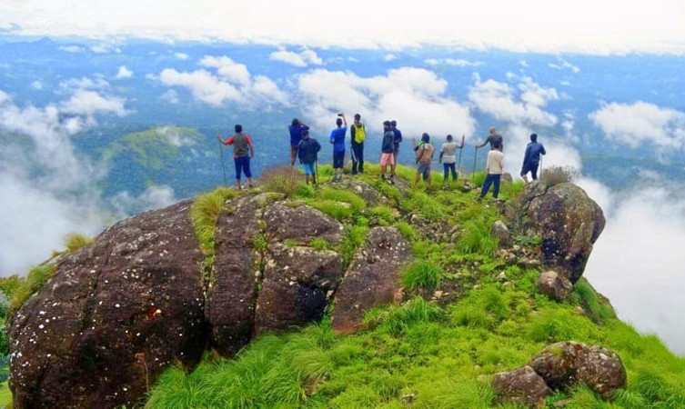

Best of Malappuram tourist places include names of Kottakkunnu, Kadalundi Bird Sanctuary, Keralam Kundu Waterfalls, Nedumkayam, Arimbra Hills, Adyanpara Waterfalls, and many others to explore. There are a number of elements that make up the city of Malappuram a favorite among tourists.
Apart from being a beautiful green addition on the map of God’s Own Country, Malapuram is a city that has seen an extensive history in the past and has developed through it.Be it the forest ranges of the city with coconut plantations, the river belt of Bharathapuzha, rainforests of Nedumkayam, the beauty of the river Challiyar, birds in Purathur, or the festive mood of the entire city throughout the year.

Bharathapuzha River

Keralam Kundu Waterfall
